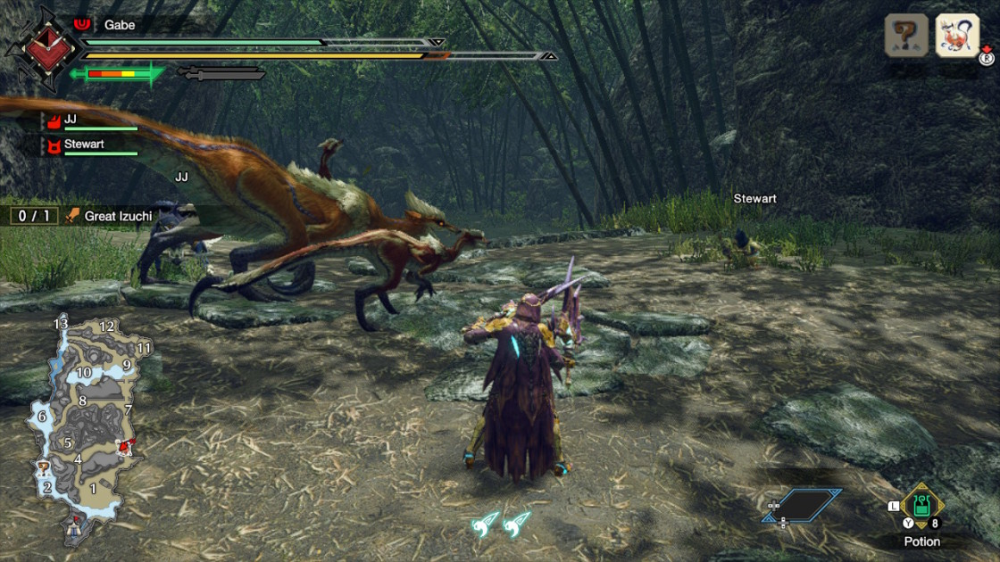

All About Monster Hunter
Monster Hunter is a series all about hunting down giant monsters and using the parts you carve from them to build weapons and armor to take down bigger and badder monsters! It involvles heavy management of game systems to accomplish this task as the monsters have large health pools and are often very difficult to take down.
Where Monster Hunter really shines is in multiplayer. The first couple games didn't focus on it much, but the later games added in the ability to play online with other gamers from around the world. This is when the series really took off and the online community exploded. When Monster Hunter Wolrd came along on the Playstation 4 and XBox One (coming later on down the line to the PC), things got even better thanks to many quality of life improvements that were introduced to make the game more appealing to the more "casual" community.
